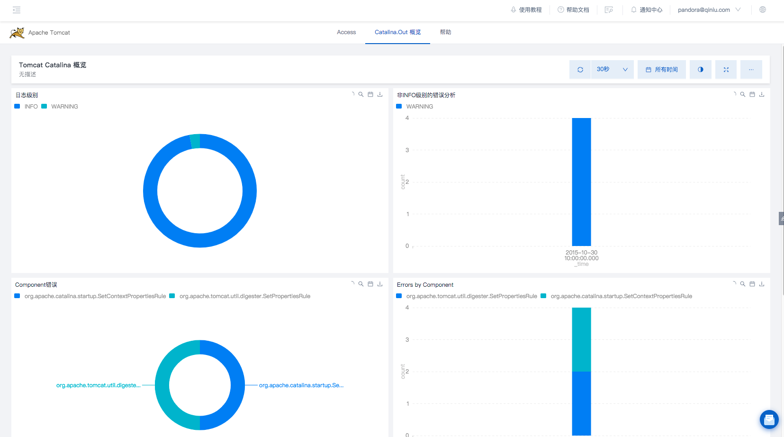
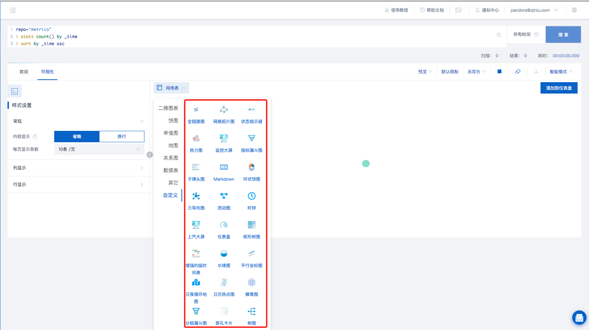
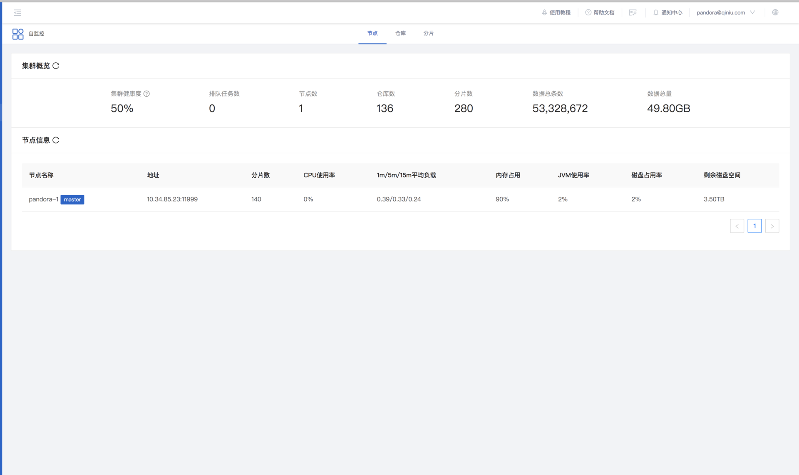
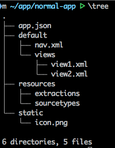
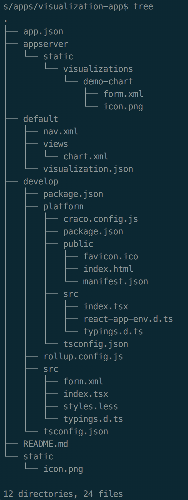
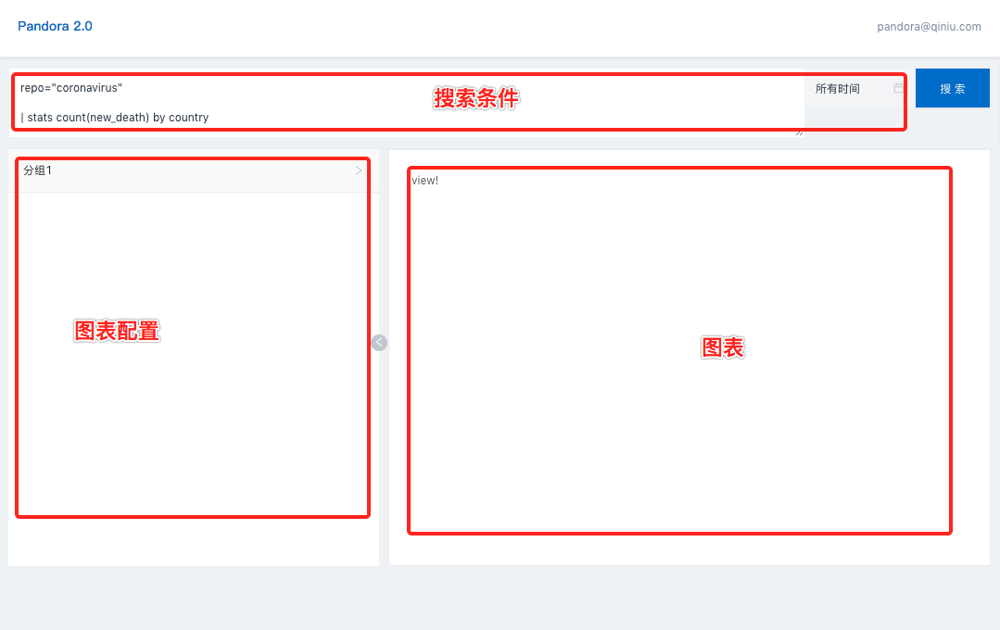
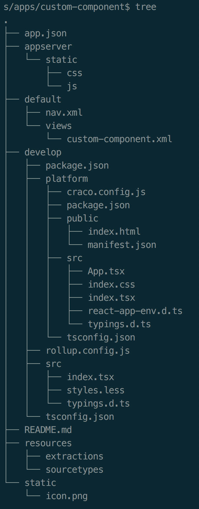
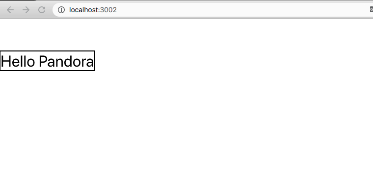

Pandora 2.0 自定义应用
应用类型
- 基础类型（normal）
- 可视化类型（visualization）
- 自定义组件类型（component）
基础类型（normal）
应用由XML文件组建而成，可展示仪表盘，搜索及可视化页面
可视化类型（visualization）
应用用于补充平台不支持的可视化图表

可视化类型（visualization）
应用用于补充平台不支持的可视化图表
自定义组件类型（component）
可用于最大化的自定义页面，目前支持React组件
create-pandora-app
https://www.npmjs.com/package/create-pandora-app
$ npx create-pandora-app appName基础类型（normal）
基础类型（normal）
基础类型（normal）
修改 view 相关的 xml 打包即可
可视化类型（visualization）
可视化类型（visualization）
可视化类型（visualization）
$ cd visualization-app/develop$ yarn setup && yarn start可视化类型（visualization）
可视化类型（visualization）
$ yarn package组件类型（component）
组件类型（component）
组件类型（component）
$ cd component-app/develop$ yarn setup && yarn start组件类型（component）
组件类型（component）
$ yarn package